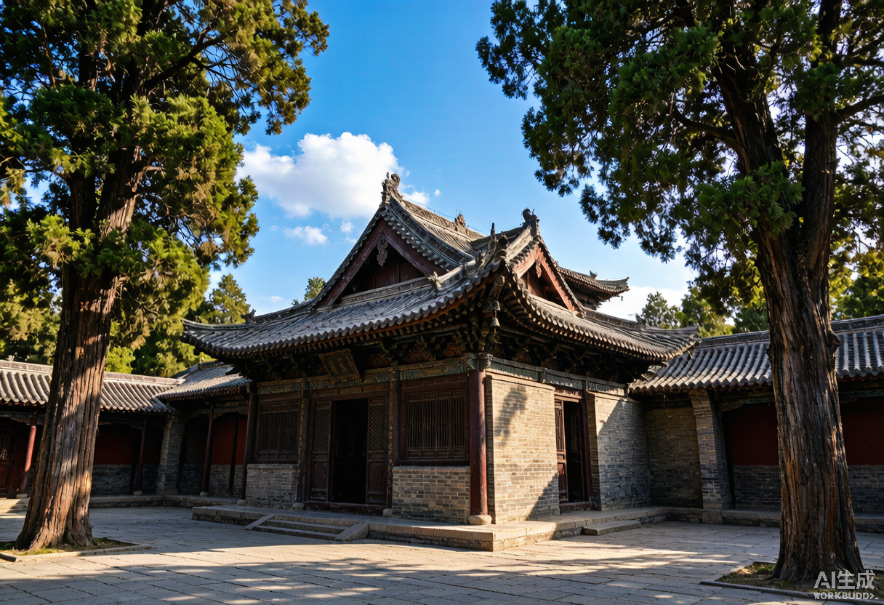
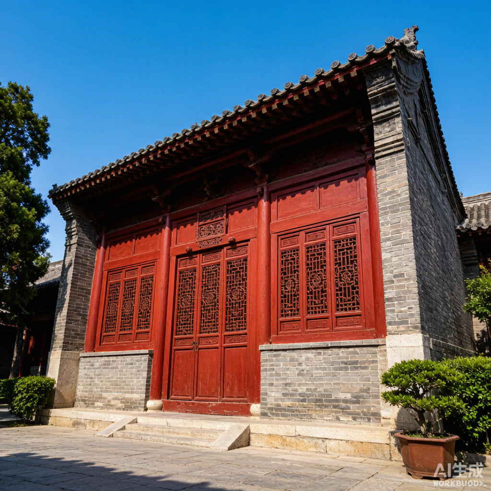
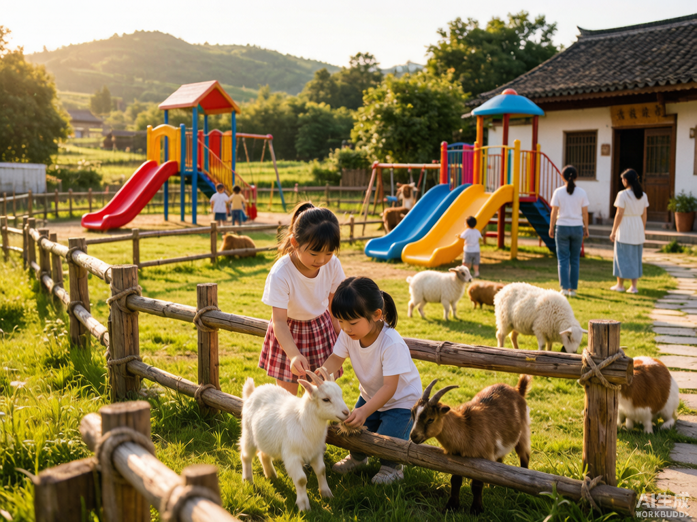

同盟山武王庙
全国唯一祭祀周武王的庙宇，明清建筑群（三进五院 40 余间殿堂），牧野之战盟誓地。开放时间：5–9 月 7:00–17:00，10–4 月 8:00–17:00。

同盟古镇 · 袁家村
仿古建筑 + 特色美食，青石板古巷、非遗作坊，建议留到晚上看夜景。
凤凰楼
登高俯瞰获嘉城景。

城隍庙
明代古建筑，位于县城内。
贤和庄水上游乐园
水上游乐项目，适合亲子游玩。

欢乐多乐园 · 三只小羊牧场乐园
亲子游乐与牧场体验。